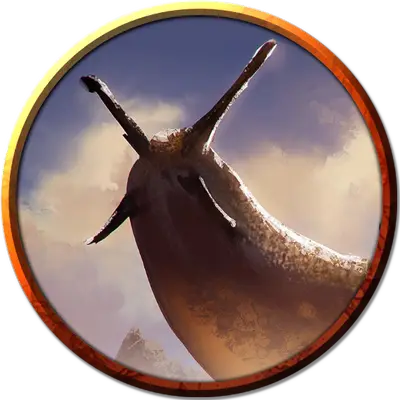

Текусистекатль
Tecuziztecatl
Большой Монстр, нейтральный, именной НИП

Класс Доспеха 13 (природный доспех)
Хиты 102 (12к10 + 36)
Скорость 30 футов, плавая 30 футов, лазая 30 футов
| мод | спас | ||
|---|---|---|---|
| СИЛ | 17 | +3 | +3 |
| ЛОВ | 10 | +0 | +0 |
| ТЕЛ | 16 | +3 | +3 |
| мод | спас | ||
|---|---|---|---|
| ИНТ | 15 | +2 | +2 |
| МДР | 16 | +3 | +3 |
| ХАР | 13 | +1 | +1 |
Навыки Обман +3, Скрытность +2
Сопротивление урону дробящий от немагических атак
Чувства слепое зрение 30 футов, пассивное Восприятие 13
Языки Олман, Первичный
Опасность 4 (1100 опыта)
Бонус мастерства +2
Особенности
Амфибия. Текусистекатль может дышать и воздухом, и под водой.
Гибкость. Текусистекатль может войти в пространство достаточное для Среднего существа без протискивания.
Свечение. Текусистекатль испускает тусклый свет в пределах 20 футов.
Паучье лазание. Текусистекатль может лазать по сложным поверхностям, включая потолки, без совершения проверок характеристик.
Действия
Мультиатака. Текусистекатль совершает две атаки Ложноножкой.
Ложноножка. . Рукопашная атака оружием: +5 к попаданию, досягаемость 10 фт, одна цель. Попадание: 12 (2к8 + 3) дробящего урона.
Плевок кислотой (перезарядка 4–6). Текусистекатль выдыхает кислоту 30-футовой линией шириной 5 футов. Все существа в этой линии должны совершить спасбросок Ловкости Сл 13, получая 18 (4к8) урона кислотой при провале или половину этого урона при успехе.
Описание
В залитой водой камере в потаённом святилище Тамоачана, цепляясь за стену, находится Текусистекатль, также известный как Повелитель улиток. Этот гигантский слизень не только разумен, но и способен говорить. При встрече с врагами, представляющими для него слишком большую угрозу, слизень может предложить свою помощь или погрузиться под воду, чтобы избежать дальнейшего вреда.